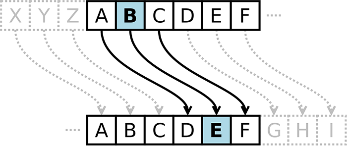

Cifrar Significa Codificar
A cifra de César é um dos primeiros tipos de criptografias conhecidas na história. O imperador romano Júlio César utilizava essa cifra para enviar ordens secretas aos seus generais no campo de batalha.
A cifra de César é uma das técnicas mais simples de cifrar uma mensagem. É um tipo de cifra por substituição, em que cada letra do texto original é substituida por outra que se encontra há um número fixo de posições (deslocamento) mais a frente do mesmo alfabeto.
Deslocamento (Offset)
Por exemplo se usarmos o deslocamento (offset) de 3 posições:
- - Alfabeto sem cifrar: A B C D E F G H I J K L M N O P Q R S T U V W X Y Z
- - Alfabeto com cifra: D E F G H I J K L M N O P Q R S T U V W X Y Z A B C
- - A letra A será D
- - A palavra CASA será FDVD
Atualmente todas as cifras de substituição alfabética simples, são decifradas com facilidade e não oferecem muita segurança na comunicação, mas a cifra de César muitas vezes pode fazer parte de um sistema mais complexo de criptografia, como a cifra de Vigenère, e tem aplicação no sistema ROT13.